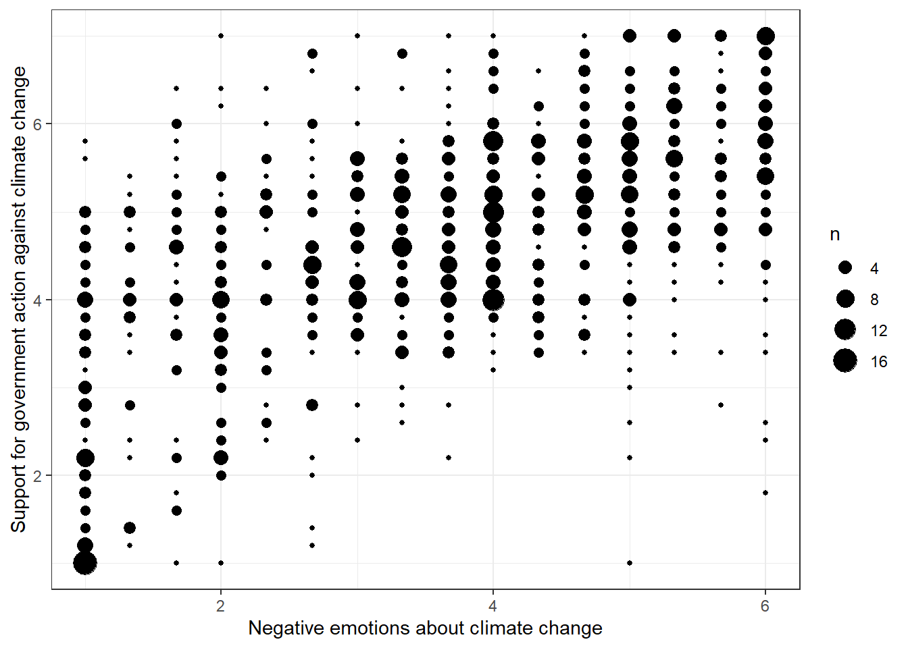

Solutions
This is where you’ll find solutions for all of the tutorials.
Solutions for Exercise 1
Task 1
Below you will see multiple choice questions. Please try to identify the correct answers. 1, 2, 3 and 4 correct answers are possible for each question.
1. What panels are part of RStudio?
Solution:
- source (x)
- console (x)
- packages, files & plots (x)
2. How do you activate R packages after you have installed them?
Solution:
- library() (x)
3. How do you create a vector in R with elements 1, 2, 3?
Solution:
- c(1,2,3) (x)
4. Imagine you have a vector called ‘vector’ with 10 numeric elements. How do you retrieve the 8th element?
Solution:
- vector[8] (x)
5. Imagine you have a vector called ‘hair’ with 5 elements: brown, black, red, blond, other. How do you retrieve the color ‘blond’?
Solution:
- hair[4] (x)
Task 2
Create a numeric vector with 8 values and assign the name age to the vector. First, display all elements of the vector. Then print only the 5th element. After that, display all elements except the 5th. Finally, display the elements at the positions 6 to 8.
Solution:
age <- c(65,52,73,71,80,62,68,87)
age## [1] 65 52 73 71 80 62 68 87age[5]## [1] 80age[-5]## [1] 65 52 73 71 62 68 87age[6:8]## [1] 62 68 87Task 3
Create a non-numeric, i.e. character, vector with 4 elements and assign the name eye_color to the vector. First, print all elements of this vector to the console. Then have only the value in the 2nd element displayed, then all values except the 2nd element. At the end, display the elements at the positions 2 to 4.
Solution:
eye_color <- c("blue", "green", "brown", "other")
eye_color## [1] "blue" "green" "brown" "other"eye_color[2]## [1] "green"eye_color[-2]## [1] "blue" "brown" "other"eye_color[2:4]## [1] "green" "brown" "other"Task 4
Create a data frame called data. The data frame should contain the following variables (in this order):
- a vector called food. It should contain 5 elements, namely the names of your five favorite dishes.
- a vector called description. For every dish mentioned in food, please describe the dish in a single sentence (for instance, if the first food you describe is “pizza”, you could write: “This is an Italian dish, which I prefer with a lot of cheese.”)
- a vector called rating. Rate every dish mentioned in food with 1-5 (using every number only once), i.e., by rating your absolute favorite dish out of all five with a 1 and your least favorite dish out of all five with a 5.
Solution:
data <- data.frame("food" = c("pizza", "pasta", "ice cream", "crisps", "passion fruit"),
"description" = c("Italian dish, I actually prefer mine with little cheese",
"Another Italian dish",
"The perfect snack in summer",
"Potatoes and oil - a luxurious combination",
"A fruit that makes me think about vacation"),
"Rating" = c(3,1,2,4,5))
data## food description Rating
## 1 pizza Italian dish, I actually prefer mine with little cheese 3
## 2 pasta Another Italian dish 1
## 3 ice cream The perfect snack in summer 2
## 4 crisps Potatoes and oil - a luxurious combination 4
## 5 passion fruit A fruit that makes me think about vacation 5Task 5
Can you sort the data in your data set by rating - with your favorite dish (i.e., the one rated “1”) on top of the list and your least favorite dish (i.e., the one rated “5”) on the bottom?
Important: You do not yet know this command - you’ll have to google for the right solution. Please do and note down the exact search terms you used for googling.
Solution:
library("dplyr")
data <- data %>% arrange(Rating)
data## food description Rating
## 1 pasta Another Italian dish 1
## 2 ice cream The perfect snack in summer 2
## 3 pizza Italian dish, I actually prefer mine with little cheese 3
## 4 crisps Potatoes and oil - a luxurious combination 4
## 5 passion fruit A fruit that makes me think about vacation 5Solutions for Exercise 2
Task 1
Below you will see multiple choice questions. Please try to identify the correct answers. 1, 2, 3 and 4 correct answers are possible for each question.
1. What are the main characteristics of tidy data?
Solution:
- Every observation is a row. (x)
2. What are dplyr functions?
Solution:
mutate()(x)
3. How can you sort the eye_color of Star Wars characters from Z to A?
Solution:
starwars_data %>% arrange(desc(eye_color))(x)starwars_data %>% select(eye_color) %>% arrange(desc(eye_color))(x)
4. Imagine you want to recode the height of the these characters. You want to have three categories from small and medium to tall. What is a valid approach?
Solution:
starwars_data %>% mutate(height = case_when(height<=150~"small",height<=190~"medium",height>190~"tall"))(x)
5. Imagine you want to provide a systematic overview over all hair colors and what species wear these hair colors frequently (not accounting for the skewed sampling of species)? What is a valid approach?
Solution:
starwars_data %>% group_by(hair_color, species) %>% summarize(count = n()) %>% arrange(hair_color)(x)
Task 2
Now it’s you turn. Load the starwars data like this:
library(dplyr) # to activate the dplyr package
starwars_data <- starwars # to assign the pre-installed starwars data set (dplyr) into a source object in our environmentHow many humans are contained in the starwars data overall? (Hint: use summarize(count = n()) or count())?
Solution:
You can use summarize(count = n()):
starwars_data %>%
filter(species == "Human") %>%
summarize(count = n())## # A tibble: 1 x 1
## count
## <int>
## 1 35Alternatively, you can use the count() function:
starwars_data %>%
filter(species == "Human") %>%
count(species)## # A tibble: 1 x 2
## species n
## <chr> <int>
## 1 Human 35Task 3
How many humans are contained in starwars by gender?
Solution:
You can use summarize(count = n()):
starwars_data %>%
filter(species == "Human") %>%
group_by(species, gender) %>%
summarize(count = n())## # A tibble: 2 x 3
## # Groups: species [1]
## species gender count
## <chr> <chr> <int>
## 1 Human feminine 9
## 2 Human masculine 26Alternatively, you can use the count() function:
starwars_data %>%
filter(species == "Human") %>%
count(species, gender)## # A tibble: 2 x 3
## species gender n
## <chr> <chr> <int>
## 1 Human feminine 9
## 2 Human masculine 26Task 4
What is the most common eye_color among Star Wars characters? (Hint: use arrange())__
Solution:
starwars_data %>%
group_by(eye_color) %>%
summarize(count = n()) %>%
arrange(desc(count))## # A tibble: 15 x 2
## eye_color count
## <chr> <int>
## 1 brown 21
## 2 blue 19
## 3 yellow 11
## 4 black 10
## 5 orange 8
## 6 red 5
## 7 hazel 3
## 8 unknown 3
## 9 blue-gray 1
## 10 dark 1
## 11 gold 1
## 12 green, yellow 1
## 13 pink 1
## 14 red, blue 1
## 15 white 1Task 5
What is the average mass of Star Wars characters that are not human and have yellow eyes? (Hint: remove all NAs)__
Solution:
starwars_data %>%
filter(species != "Human" & eye_color=="yellow") %>%
summarize(mean_mass = mean(mass, na.rm=TRUE))## # A tibble: 1 x 1
## mean_mass
## <dbl>
## 1 74.1Task 6
Compare the mean, median, and standard deviation of mass for all humans and droids. (Hint: remove all NAs)__
Solution:
starwars_data %>%
filter(species=="Human" | species=="Droid") %>%
group_by(species) %>%
summarize(M = mean(mass, na.rm = TRUE),
Med = median(mass, na.rm = TRUE),
SD = sd(mass, na.rm = TRUE)
)## # A tibble: 2 x 4
## species M Med SD
## <chr> <dbl> <dbl> <dbl>
## 1 Droid 69.8 53.5 51.0
## 2 Human 82.8 79 19.4Task 7
Create a new variable in which you store the mass in gram. Add it to the data frame.
Solution:
starwars_data <- starwars_data %>%
mutate(gr_mass = mass*1000)
starwars_data %>%
select(name, species, mass, gr_mass)## # A tibble: 87 x 4
## name species mass gr_mass
## <chr> <chr> <dbl> <dbl>
## 1 Luke Skywalker Human 77 77000
## 2 C-3PO Droid 75 75000
## 3 R2-D2 Droid 32 32000
## 4 Darth Vader Human 136 136000
## 5 Leia Organa Human 49 49000
## 6 Owen Lars Human 120 120000
## 7 Beru Whitesun lars Human 75 75000
## 8 R5-D4 Droid 32 32000
## 9 Biggs Darklighter Human 84 84000
## 10 Obi-Wan Kenobi Human 77 77000
## # ... with 77 more rowsSolutions for Exercise 3
Task 1
Try to reproduce this plot with dplyr and ggplot2. (Hint: You can hide the legend by adding theme(legend.position = "none") to your plot.)
Solution:
data %>%
mutate(sex = case_when(
sex == 0 ~ "Female",
sex == 1 ~ "Male")) %>%
mutate(Party = case_when(
partyid == 1 ~ "Democrat",
partyid == 2 ~ "Independent",
partyid == 3 ~ "Republican")) %>%
ggplot(aes(x=Party,y=negemot, fill=Party)) +
stat_summary(geom = "bar", fun = "mean") +
theme_bw() +
theme(legend.position = "none") +
labs(title = "Climate change attitudes of U.S. partisans by gender",
y = "Negative emotions about climate change") +
facet_wrap(~sex, nrow=2)Task 2
Now, try to reproduce this graph. (Hint: You will need to recode the ideology variable in a way that higher values represent stronger attitudes, independent of partisanship.)
Solution:
data <- data %>%
mutate(ideology_ext = case_when(
ideology == 1 ~ 4,
ideology == 2 ~ 3,
ideology == 3 ~ 2,
ideology == 4 ~ 1,
ideology == 5 ~ 2,
ideology == 6 ~ 3,
ideology == 7 ~ 4)) %>%
mutate(sex = case_when(
sex == 0 ~ "Female",
sex == 1 ~ "Male")) %>%
mutate(Party = case_when(
partyid == 1 ~ "Democrat",
partyid == 2 ~ "Independent",
partyid == 3 ~ "Republican"))data %>%
ggplot(aes(x=Party,y=ideology_ext, fill=Party)) +
geom_boxplot() +
theme_bw() +
theme(legend.position = "none") +
labs(title = "Ideological extremity of U.S. partisans by gender",
y = "Ideological extremity") +
facet_wrap(~sex)Task 3
Can you make a chart that breaks down the relationship between age, negative emotions about climate change, and ideological extremity for the different sexes AND parties?
Solution 1:
data %>%
ggplot(aes(x=age,y=negemot, size=ideology_ext, color = Party)) +
geom_point() +
scale_size(range = c(0.3, 3), name = "Ideological extremity") +
theme_bw() +
labs(title = "Relationship between age, climate change attitudes, \n and ideological extremity",
x = "Age", y = "Negative emotions about climate change") +
facet_wrap(~sex, nrow=2)
Solution 2:
Alternatively, you might enjoy this look that you can create with facet_grid():
data %>%
ggplot(aes(x=age,y=negemot, size=ideology_ext, color = Party)) +
geom_point() +
scale_size(range = c(0.3, 3), name = "Ideological extremity") +
theme_bw() +
labs(title = "Relationship between age, climate change attitudes, and ideological extremity",
x = "Age", y = "Negative emotions about climate change") +
facet_grid(vars(sex), vars(Party))
Solution 3:
Or even this look, also done with facet_grid():
data %>%
ggplot(aes(x=age,y=negemot, size=ideology_ext, color = Party)) +
geom_point() +
scale_size(range = c(0.3, 3), name = "Ideological extremity") +
theme_bw() +
labs(title = "Relationship between age, climate change attitudes, and ideological extremity",
x = "Age", y = "Negative emotions about climate change") +
facet_grid(~sex + Party)